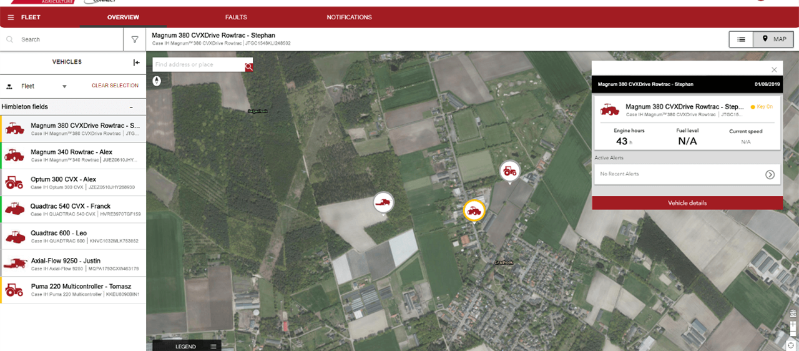

02 sept. 2019
Le transfert bidirectionnel enregistre instantanément les données du parcellaire et des travaux / Les propriétaires de machines peuvent surveiller les informations comme la position et les niveaux de carburant / Les utilisateurs peuvent télécharger les prescriptions à distance, comme des cartes d'application de semis ou de fertilisation / Le concessionnaire qui bénéficie d’une autorisation d'accès peut vous aider à configurer votre machine et à optimiser ses performances
Grâce à Case IH AFS Connect les propriétaires et les exploitants agricoles peuvent non seulement recevoir et analyser – instantanément ou a posteriori – des données sur les performances des machines, mais aussi planifier les opérations depuis un ordinateur de bureau ou un smartphone avant même de commencer le travail. Les éléments peuvent ensuite être transmis à distance au tracteur et à son conducteur.
Le portail Fleet Management permet aux propriétaires/exploitants agricoles tout comme aux conducteurs de surveiller la performance de la machine sur le terminal de cabine AFS Pro 1200 ou le portail ou l'application web. Les données comme les heures de fonctionnement de la machine, les températures, les régimes moteur et les échéances d’entretien sont enregistrées et actualisées en permanence, ce qui se fait automatiquement et sans interruption, tout comme le transfert des autres données. Il est possible de configurer des SMS d'alerte personnalisés pour le cas où le tracteur dépasse une valeur de fonctionnement préréglée, comme un certain régime moteur ou une certaine température de service. L'identification des anomalies ou problèmes permet aux clients de faire preuve de proactivité pour la planification et l'exécution de la maintenance.
« Avec AFS Connect, l'enregistrement et la surveillance instantanés sont à portée de main de l'exploitant. Pas besoin d'une clé USB qui s'endommage ou se perd facilement pour transférer les données entre le terminal du tracteur et un ordinateur de bureau ou portable », ajoute Maxime Rocaboy.
« Les données sont tout de suite regroupées dans le cloud et disponibles immédiatement pour analyse. Les propriétaires et exploitants agricoles peuvent ainsi vérifier via leur PC ou smartphone que tout fonctionne parfaitement avec la machine et que le travail progresse comme prévu. Par ailleurs, ils ont également la certitude d'être avertis rapidement en cas de problème – tout comme leur concessionnaire, s'il y est autorisé. Autrement dit, toute anomalie peut être identifiée et, par conséquent, résolue nettement plus rapidement. Si l'on y ajoute la surveillance par le concessionnaire, la notification d'un problème – et, si possible, le diagnostic à distance du défaut – cela signifie que le concessionnaire peut préparer les pièces nécessaires à la réparation de la machine et ainsi réduire les temps d'immobilisation et les coûts. »
Article original : Ici